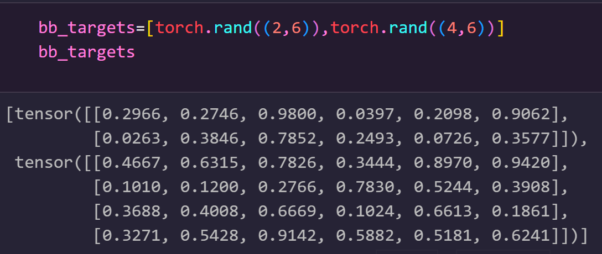
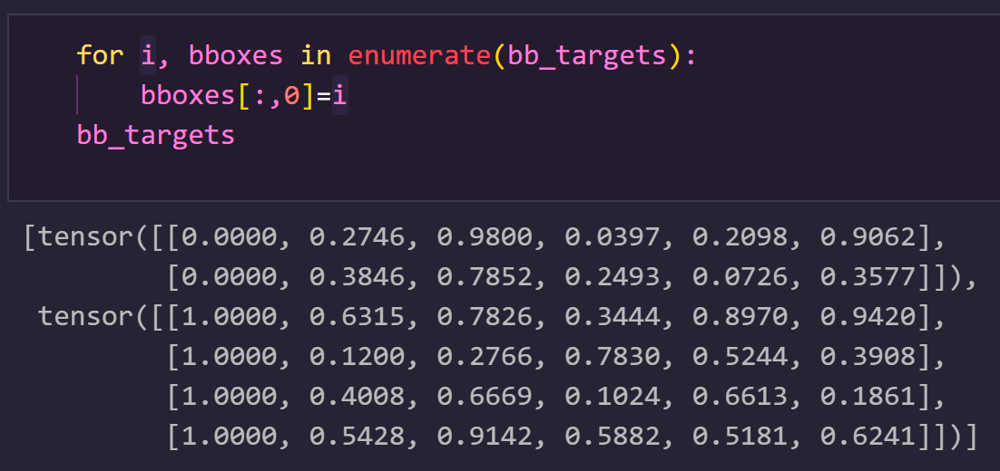
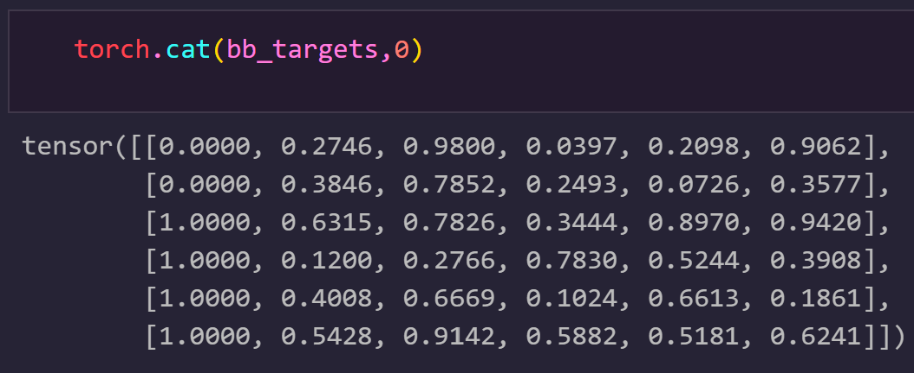

PyTorch中的collate_fn有什么作用?
在使用PyTorch创建自定义数据集时，通常是先使用数据和标签定义一个DataSet类，然后将其传入DataLoader，这样就定义好了一个数据加载器。
对于一些简单的任务，以上操作已经足够了。但有些时候，还需要自定义DataLoader类中的collate_fn方法。
DataSet类中定义了获取单个样本的方法(自定义__getitem__)，DataLoader类中定义了获取一个batch个样本的方法(相当于多次执行__getitem__)，将这一个batch的样本数据传入DataLOader类中的collate_fn方法，使用collate_fn中定义的逻辑对着一个batch的样本数据做进一步的处理。
下面以目标检测为例，进一步解释自定义collate_fn的必要性。
假设batch size=2，那么一个batch的数据格式可能是这样的：
1 | images：[图片1，图片2] |
图片的shape是固定的，而由于每张图片所含的bbox的个数一般是不同的，所以标签的shape是不一致的，比如第一张图片含有3个bbox，那么对应的标签的shape是[3,5]，而第二张图片中含有4个bbox，那么对应的标签的shape是[4,5].
这样，对于图片，直接新创建一个维度(unsqueeze(dim=0))，在dim0上做concat就可以得到类似[batch size, 3, w,h]的格式了。
但对于标签，如果按照上述操作做unsqueeze获取batch维度后，无法做concat，因为bbox数量所在维度取值不一致。
而如果直接做concat，结果的shape是[m,5]，其中m是整个batch中的bbox总数，从而无法区分到底是哪张图片的bbox。
如果可以对每张图片的标签都做一个标记，使得相同图片具有相同的标记，不同图片的标记各不相同，那么，就可以在计算loss时写一个逻辑，根据标记对不同图片的标签进行区分，从而完成正确的loss计算。
通过自定义collate_fn的方法，就可以实现对于每张图片对应标签的标记，就像下面这样：
1 | def collate_fn(self, batch): |
这是在DataSet类中实现的一个collate_fn，该函数将一个batch中不同图片的唯一索引作为区分不同图片对应标签的标记。
举个栗子，假设batch size为2，bb_targets是每张图片对应的的标签，每个标签共6列，其中后面5列分别对应类别和坐标信息(只是为了举例说明，不要在意具体数值)，第一列用于标记不同图片，目前无意义。

将图片的索引赋值给第一列，这样，索引是0的图片对应的所有bbox标签均为0，索引是1的图片对应的所有bbox标签均为1，以此类推。

如此一来，就可以放心的在第0个维度上做concat了，由于已经标记了不同图片的索引(第一列)，因此后续能够根据这一索引区分不同图片的标签，完成loss的计算。

在具体使用时，只需要将自定义的collate_fn传入Dataloader中的collate_fn参数即可。